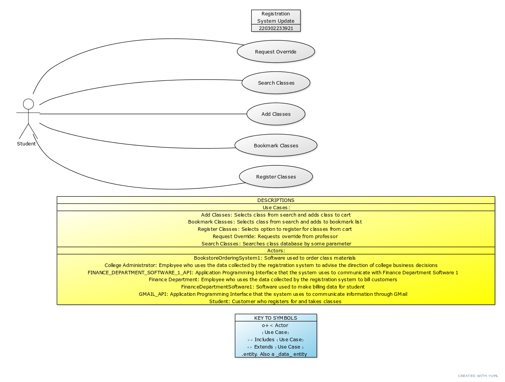
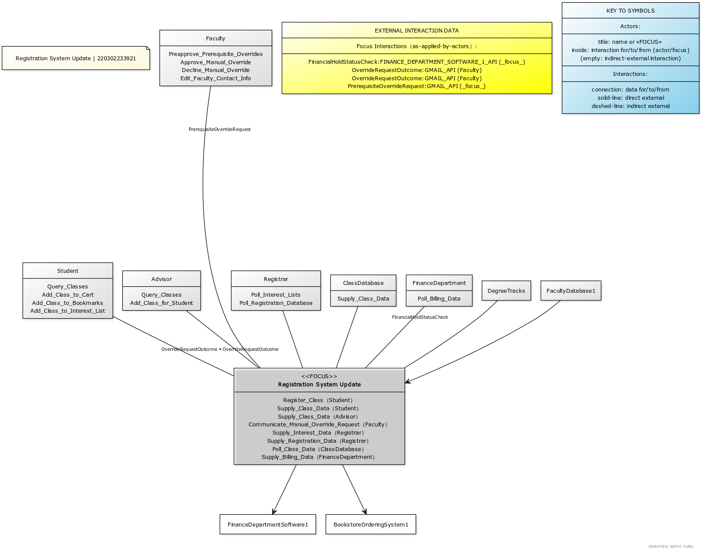
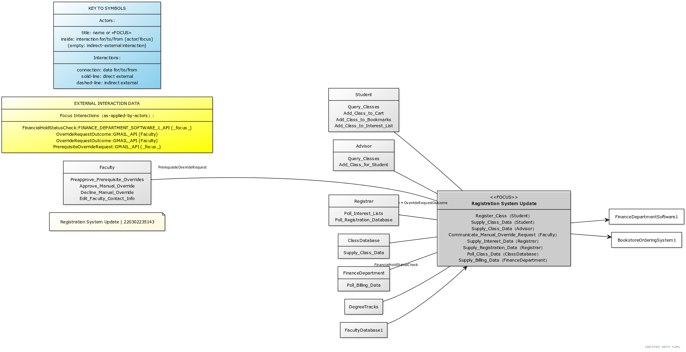
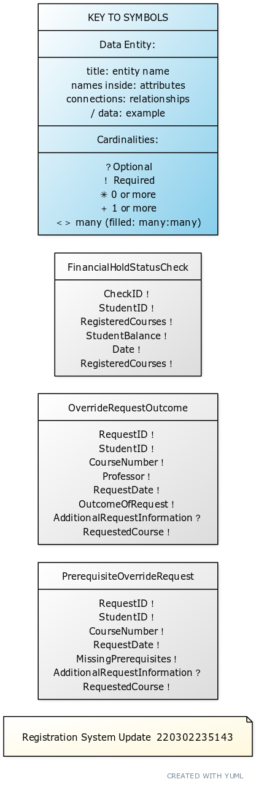
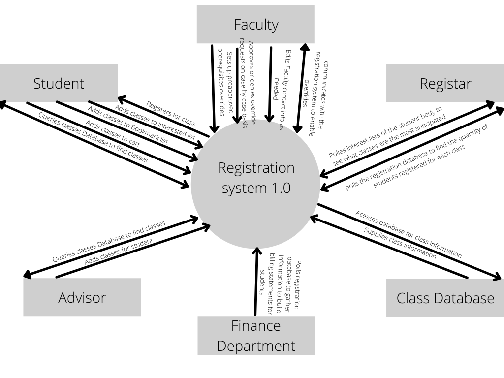
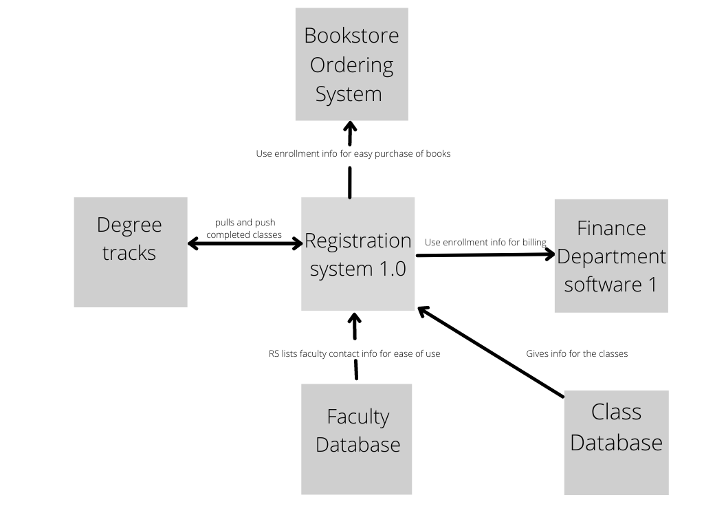
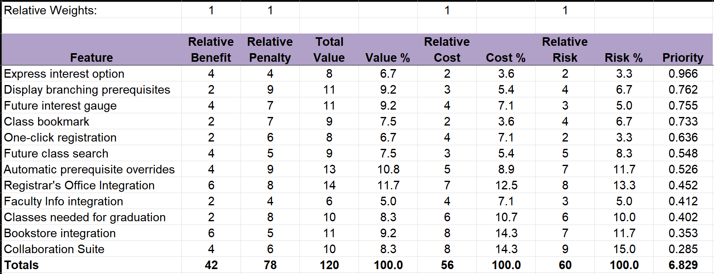

Solution Requirements Specification: Registration System Update 1.1.0
Version History
| Version | Date | Contributors | Comments |
|---|
| 1.1 | 3/4/2022 | Esplin, Brady | Finished Version (Made small edits) |
| 1.0 | 3/2/2022 | Esplin, Brady | Feedback Version |
| 0.3 | 3/2/2022 | Petty, Sam | Second Edit |
| 0.2 | 3/2/2022 | Callaway, Sarah | First Edit |
| 0.1 | 3/2/2022 | Esplin, Brady | Initial Setup |
Vision and Scope Summary
Vision and Scope with User Classes
Use Cases
Use Case Diagram

Use Case Specifications
SCROLLABLE
Context Diagram with Ecosystem and Interaction Data
See also: Data Dictionary section
Context Top-Down View

Context Left-Right View

Data Dictionary and Sample Data
See also: Context Diagram section
Data Dictionary
SCROLLABLE
Entity-Relationship Diagram
See also: Data Dictionary, Context Diagram sections
ERD Left-Right View

Appendix A: Normative Asset Sources
EAReStore Container
1) Open using browser of choice 2) Click "Apply EARe" to show assets.
registrationSystemUpdate__EARESTORE.html
EAReXML
Transform with XSLT to process requirement specifications, solution design, and data assets:
registrationSystemUpdate__EARe.xml
EARe Markup
Source Text for normative assets:
registrationSystemUpdate__EARe.txt
Preview:
SCROLLABLE
Appendix B: Informative Assets
Vision and Scope Document
SCROLLABLE
User Classes Document
SCROLLABLE
Use Cases
SCROLLABLE
Context and Ecosystem


Data Dictionary
SCROLLABLE
Quality Attributes
SCROLLABLE
Prioritizing Requirements
